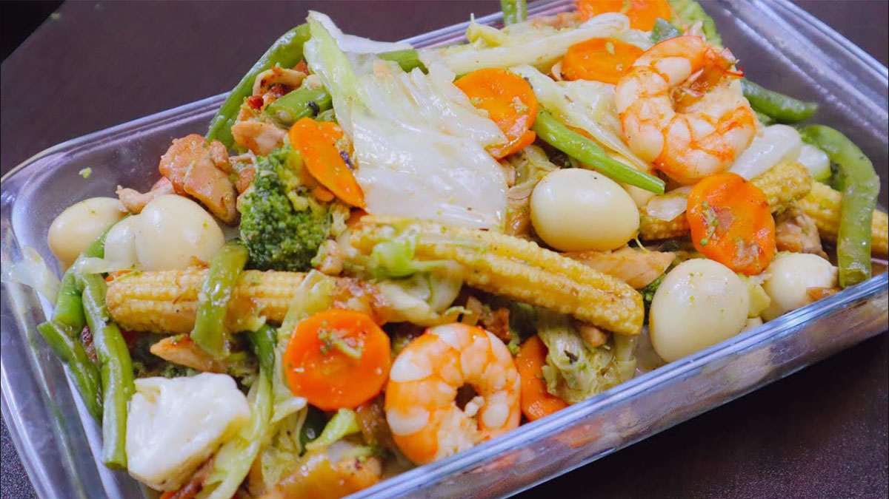

Collection of Vegetable Recipes
Pinakbet

Pinakbet (also called pakbet) is an indigenous Filipino dish from the northern regions of the Philippines. Pinakbet is made with a variety of mixed vegetables flavored with bagoong. The word is the contracted from the Ilokano word pinakebbet, meaning "shrunk" or "shriveled.
Chop Seuy
Chop suey is believed to have originated in the Guandong province of China and was brought to the Philippines by Chinese immigrants in the 19th century.
Ginisang Sitaw at Kalabasa